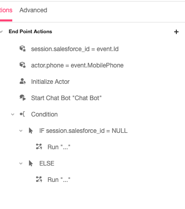

Hey Chris! Good question.
Both of these can be accomplished in the End Point Actions you can see on the right hand side of the studio when working with a Salesforce subscription.
First you’ll want to set the Session Mapping for this subscription, so as an example, mine looked something like this:
With the Salesforce response, you’ll want to use the keyword “event” to access the returned data. In the screenshot below I’m capturing the Id and the MobilePhone values but those are dependent on your salesforce object you’re working with.

Everything else if just through conditions on the endpoint actions. I put a dummy version of what that could look like in the screen shot.
Personally I would test this out using a request catcher to make sure you’re accessing the data you need before using them in the studio, like this one https://requestcatcher.com/. That way you can get the namespaces of what you need from Salesforce and ensure you’re receiving them in the API


{kind=link}
{kind=link}
{kind=link}
{kind=link}
{kind=link}
{kind=link}